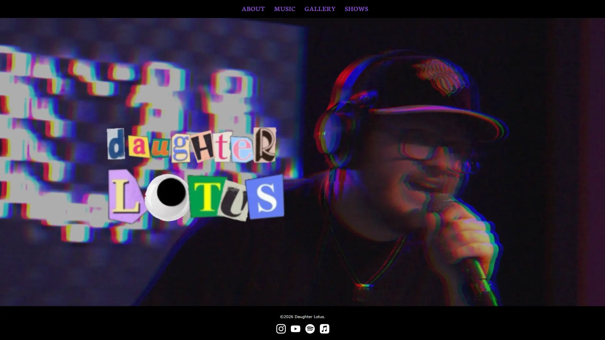
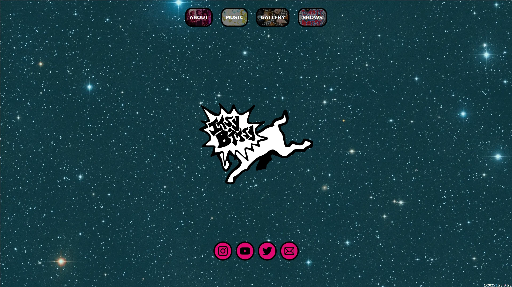
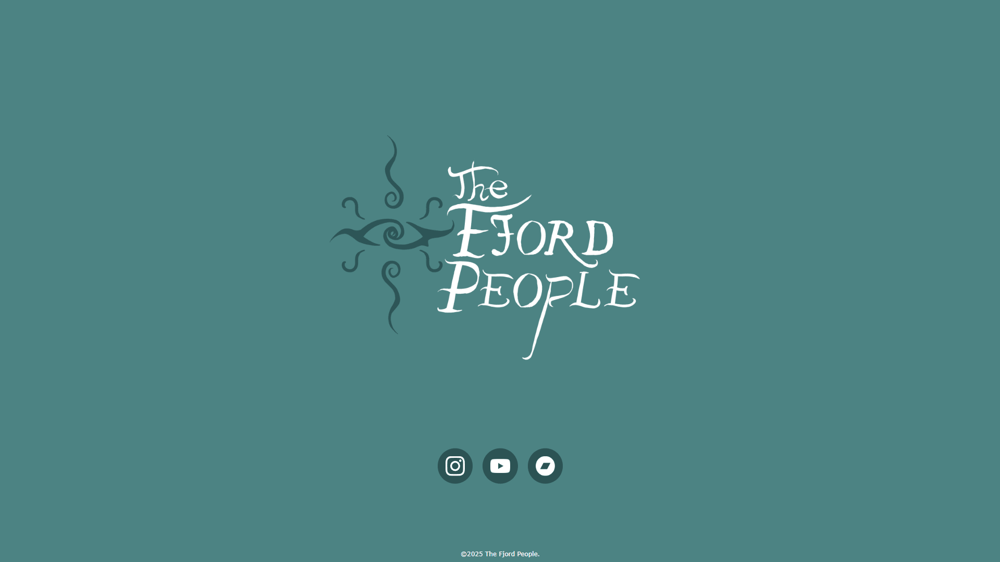

a web developer and student at Boise State University.
Brian Dyer
thisisbriand@gmail.com
(Tip: click project titles to learn more!)
2025-2026
I designed and developed a website for Daughter Lotus, an alternative-pop artist based in Boise, Idaho.

2024-2025
I designed and developed a website for Boise indie-rock band Itsy Bitsy.

2024
I designed and developed a simple landing-page website for Boise funk collective The Fjord People.
